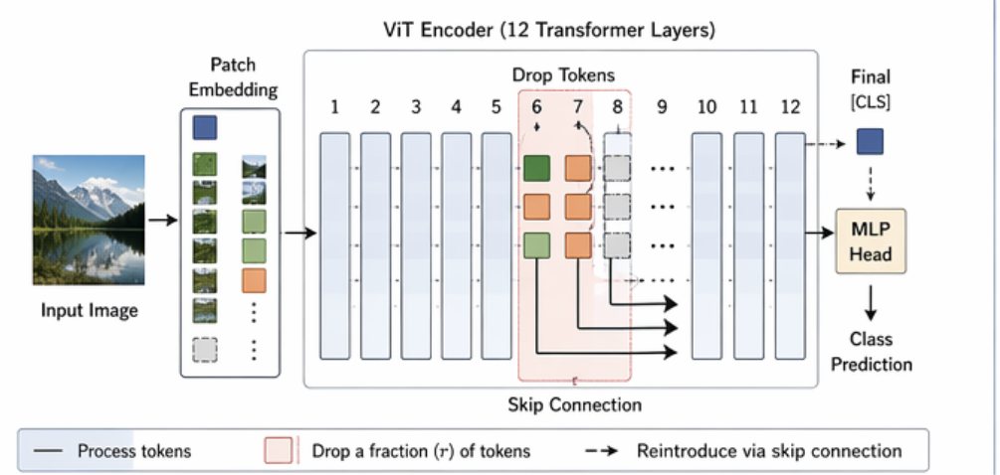
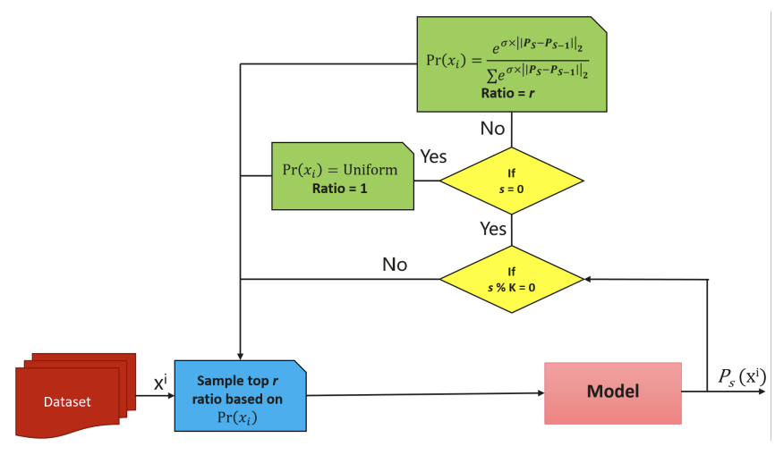
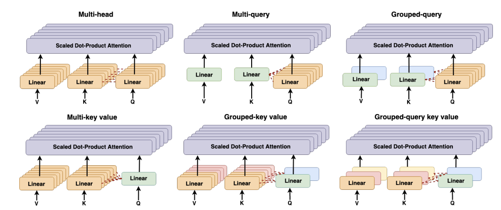
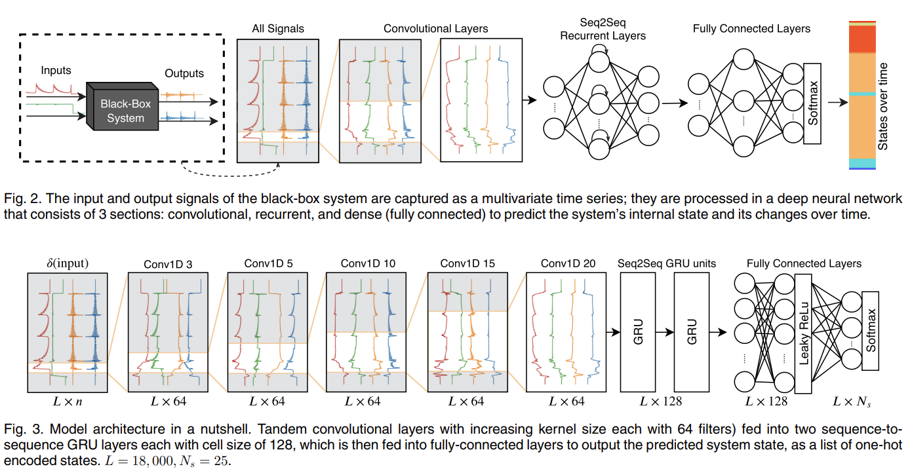
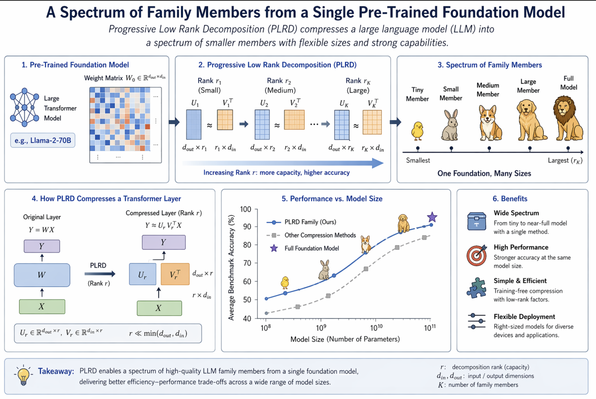

Research
|
DLSS 5: Generative Neural Rendering
NVIDIA Corporation Technical Report, 2026 DLSS 5 brings real-time generative rendering to games with 3D-guided diffusion. I contributed to the research behind this project. project page | technical report | GTC talk | SIGGRAPH talk |
|
|
 |
SkipViT: Speeding Up Vision Transformers with a Token-Level Skip Connection
F. Ataiefard, W. Ahmed, H. Hajimolahoseini, S. Asani, F. Javadi, M. Hassanpour, O. Awad, A. Wen, K. Liu, Y. Liu Edge Intelligence Workshop, AAAI 2024 paper |
|
 |
SwiftLearn: A Data-Efficient Training Method of Deep Learning Models using Importance Sampling
H. Hajimolahoseini, O. Awad, W. Ahmed, A. Wen, S. Asani, M. Hassanpour, F. Javadi, M. Ahmadi, F. Ataiefard, K. Liu, Y. Liu ENLSP Workshop, NeurIPS 2023 paper |
|
 |
GQKVA: Efficient Pre-training of Transformers by Grouping Queries, Keys, and Values
F. Javadi, W. Ahmed, H. Hajimolahoseini, F. Ataiefard, M. Hassanpour, S. Asani, A. Wen, O. Awad, K. Liu, Y. Liu ENLSP Workshop, NeurIPS 2023 paper |

|
Gray-box Adversarial Attack of Deep Reinforcement Learning-based Trading Agents
F. Ataiefard, H. Hemmati ICMLA 2023 paper |
|
 |
Deep State Inference: Toward Behavioral Model Inference of Black-box Software Systems
F. Ataiefard, M. J. Mashhadi, H. Hemmati, N. Walkinshaw IEEE Transactions on Software Engineering 2021 paper |
|
 |
Single parent family: A spectrum of family members from a single pre-trained foundation model
H. Hajimolahoseini, M. Hassanpour, F. Ataiefard, B. Chen, Y. Liu Under Review paper |

|
A Hybrid Approach for Thread Recommendation in Massive Open Online Course Forums
A. Kardan, A. Narimani, F. Ataiefard |